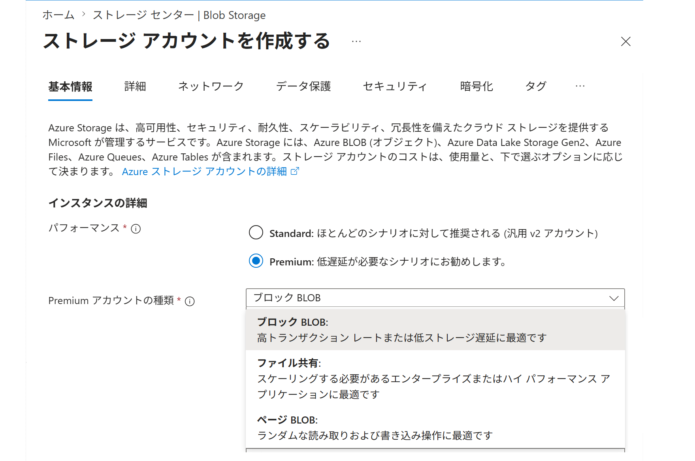
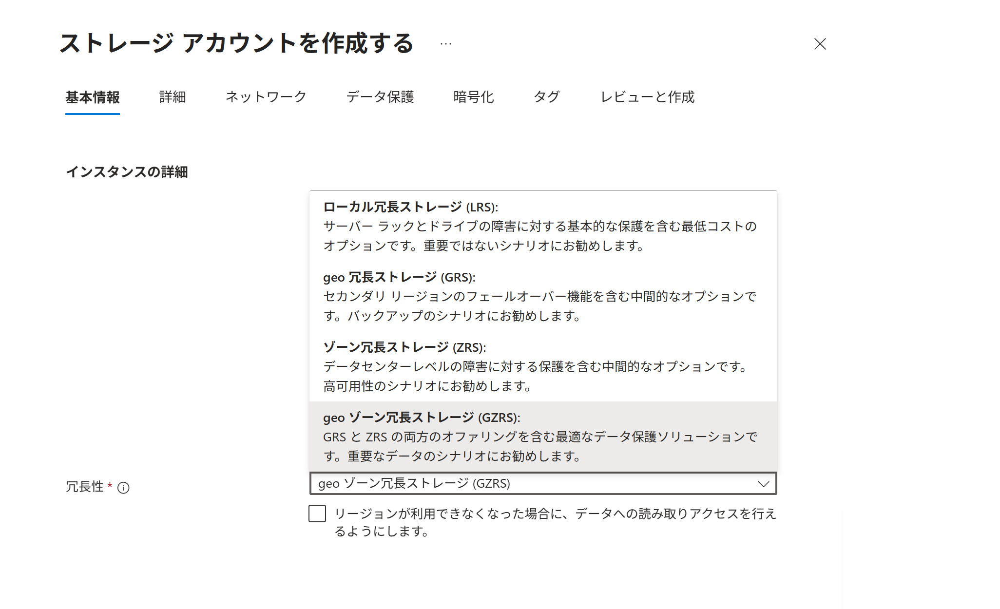
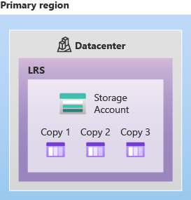
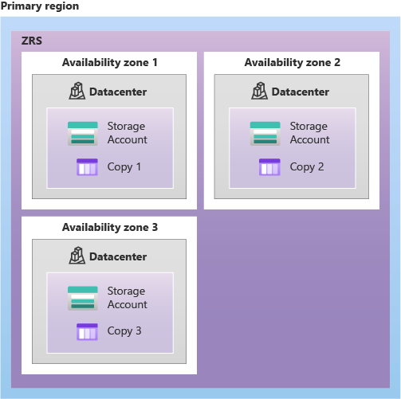
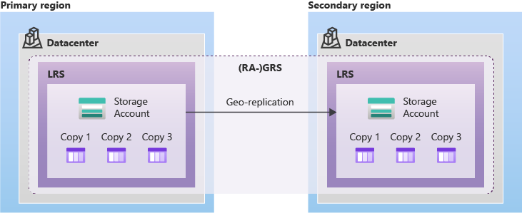
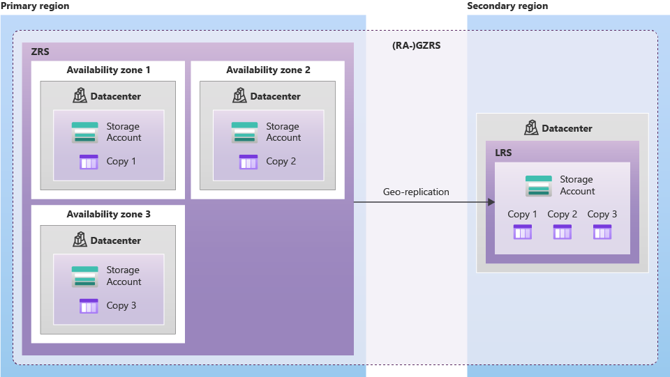
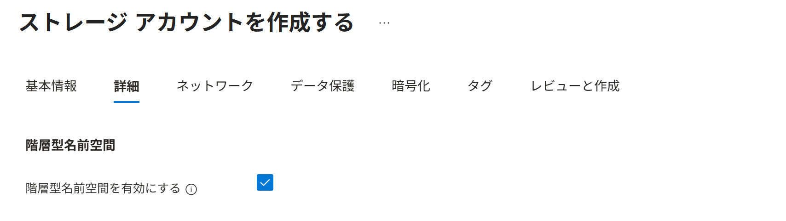
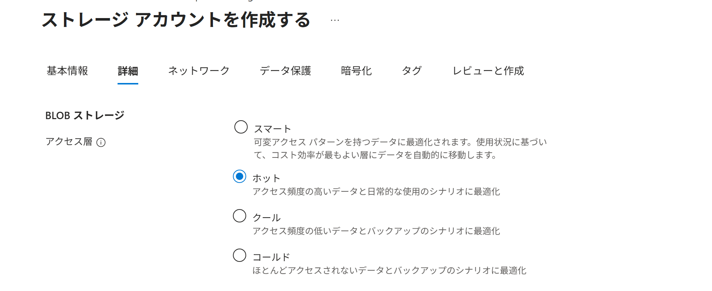
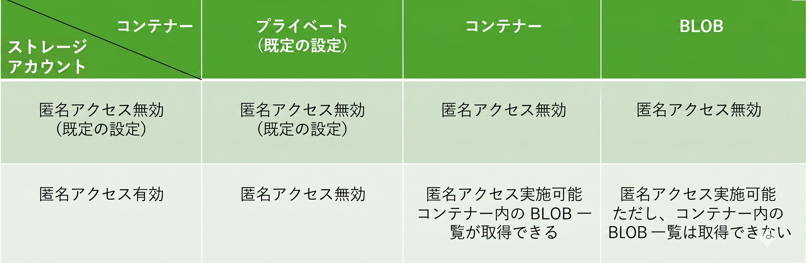

Azure ストレージ
Azure ストレージは、さまざまなデータを保存するための クラウド ストレージ基盤です。
いくつかのストレージ サービスを、用途に応じて使い分けます。

ストレージ サービス
ストレージ サービス は、Azure ストレージで利用するデータ保存サービスの総称です。
Azure ポータルのメニューから 個々のストレージ サービスを利用できます。

| ポータルでの メニュー | サービス / 拡張機能 | 概要・主な特徴 | |
|---|---|---|---|
| [コンテナー] | Blob Storage | 画像やログなどを保存する汎用的なオブジェクト ストレージ（フラットな名前空間） | |
| Azure Data Lake Storage Gen2 (ADLS Gen2) | Blob Storage を基盤に、機能を拡張したデータレイク向けストレージ（階層型名前空間） | ||
| [テーブル] | Table Storage | 非リレーショナルな構造化データ向け NoSQL データストア | |
| [キュー] | Queue Storage | アプリケーション間で非同期メッセージをやり取りするためのキューサービス | |
| [ファイル共有] | Azure Files | ファイル共有プロトコル(SMB/NFS)に対応したファイルストレージ | |
ストレージ アカウント
ストレージ アカウントは、ストレージ サービスを利用・管理するための管理単位です。
ストレージ アカウントは 作成時の「パフォーマンス」「アカウントの種類」で 分類できます。

| パフォーマンス | アカウントの種類 | 説明 / 備考 |
|---|---|---|
| Standard | 汎用 v2 | ほとんどのシナリオに推奨。 幅広い冗長オプションに対応。 |
| Premium | ページ BLOB | ランダムな読み書き操作に最適。 |
| ブロック BLOB | 高トランザクションレートまたは低ストレージ遅延に最適。 | |
| ファイル共有 | 高性能なファイル共有やスケールが必要な用途に最適。 |
冗長オプション
Azure ストレージでは、保存したデータを システムが自動的にレプリケート（コピー）します。
冗長オプションはストレージアカウント単位で設定し、
データをどこにどのようにレプリケートするかを選択します。



オプション名は、L / Z / G といった複製先を表す記号、RS = Redundant Storage（冗長ストレージ）、そして必要に応じて RA = Read-Access（読み取りアクセス）を組み合わせて表します。

LRS : Locally-Redundant Storage (ローカル冗長ストレージ)
ZRS : Zone-Redundant Storage (ゾーン冗長ストレージ)
GRS : Geo-Redundant Storage (geo 冗長ストレージ)RA-GRS : Read-Access Geo-Redundant Storage (読み取りアクセス ~)

GZRS : Geo-Zone-Redundant Storage (geo ゾーン冗長ストレージ)RA-GZRS : Read-Access Geo-Zone-Redundant Storage (読み取りアクセス ~)
どこにどのようにレプリケートするか
| 種類 | どこにどのようにレプリケートするか | 位置づけ |
|---|---|---|
| LRS | プライマリリージョン内の1つのデータセンター内で3つのラックへ同期コピー。 | 最小コストの基本冗長化。 |
| ZRS | 同一リージョン内の3つのゾーンへ同期コピー。 | ゾーン障害まで考えた高可用設計。 |
| GRS | プライマリリージョンで LRS、さらにセカンダリリージョン で LRS（非同期コピー）。 | リージョン障害を想定した災害対策。 |
| GZRS | プライマリリージョンで ZRS、さらにセカンダリリージョン で LRS（非同期コピー）。 | ゾーン障害とリージョン災害の両方を強く意識した構成。 |
| RA-GRS / RA-GZRS |
GRS / GZRS だけでなく、平常時からセカンダリリージョンの読み取りを可能にする。 | 読み取り継続性を強めたい設計向け。 |
選択できる冗長オプションは、ストレージ アカウントの種類や利用するサービスによって異なります。
| アカウントの種類 | 冗長オプション（一部選択できない場合あり） |
|---|---|
| Standard 汎用 v2 | LRS / ZRS / GRS / GZRS / (RA-GRS) / (RA-GZRS) |
| Premium ページ BLOB | LRS / ZRS |
| Premium ブロック BLOB | LRS / ZRS |
| Premium ファイル共有 | LRS / ZRS |
冗長性とバックアップは別です。冗長性はインフラ障害に備える仕組みで、誤削除やデータ破損にはバックアップやバージョン管理を利用します。
Azure Data Lake Storage Gen2 (ADLS Gen2)
ADLS Gen2 は完全に独立したサービスというより、Blob Storage を拡張して 階層型名前空間 の機能を有効化したものです（Blob Storage はフラットな名前空間）。
階層型名前空間は ストレージアカウント単位で設定します。


| フラットな名前空間 | 階層型名前空間 |
|---|---|
| データをディレクトリ階層ではなく、平らな名前の集合として扱う方式。 ディレクトリは本物のディレクトリではなく、BLOB 名の / で区切られた部分をディレクトリっぽく見せている。 |
データをPCのファイルシステムのように、ディレクトリ階層で管理できる方式。 |
マルチプロトコルアクセス
ADLS Gen2 の BLOB は、内部では階層型名前空間で管理されますが、外部からのアクセスには 階層型名前空間での読み書きと フラットな名前空間での読み書きの 両方に対応します。

アクセス層
アクセス層は、データの利用頻度に応じて、保存コストとアクセスコストを最適化する設定です。
アクセス層に対応しているのは、一部のストレージアカウントと一部の BLOB だけです。

| アクセス層 | アクセス性 | 最短保存期間 | コスト傾向 | 主な用途・補足 |
|---|---|---|---|---|
| ホット | オンライン | なし | 保存コスト: 高め アクセスコスト: 低め |
頻繁に読み書きするデータ。画像や Activeなログなど。 |
| クール | オンライン | 30日 | 保存コスト: 中 アクセスコスト: 中 |
たまに参照するデータ。直近のバックアップなど。 |
| コールド | オンライン | 90日 | 保存コスト: 安い アクセスコスト: 高め |
めったに参照しないが、必要時は即座にアクセスしたいデータ。 |
| アーカイブ | オフライン | 180日 | 保存コスト: 最安 アクセスコスト: 最高 |
長期保管用。参照にはオンライン層へ戻す操作と復元待ちが必要。選べる冗長オプションに制限あり。アーカイブ層は、アカウントではなく、BLOB レベルでのみ設定できる。 |
-
オンラインとオフライン
- オンライン：待ち時間なしで即座に読み書きが可能。
- オフライン：読み取る前に、オンラインに戻す操作と数時間〜15時間の復元待ち（リハイドレーション）が必要。
-
コスト構造
- データの「保存」と「アクセス」の両方に料金がかかる。
- 保存コストが安い層ほど、アクセスコストが高くなる反比例の関係。
-
最短保存期間
- 保存コストが安い層には、最低利用期間がある。
- 期間内に削除したり他の層へ移したりしても、その期間分の料金は課金される。
アクセス層を設定できるストレージアカウントは Standard 汎用 v2 だけです。
| ストレージアカウントの種類 | アカウント既定のアクセス層 | BLOB ごとのアクセス層 |
|---|---|---|
| Standard 汎用 v2 | ホット / クール / コールド | ブロック BLOB のみ： ホット / クール / コールド / アーカイブ |
| Premium ページ BLOB | 非対応 | 非対応 |
| Premium ブロック BLOB | 非対応 | 非対応 |
| Premium ファイル共有 | 非対応 | 非対応 |
アクセス層を設定できる BLOB の種類 は ブロック BLOB だけです。
| BLOB の種類 | ホット | クール | コールド | アーカイブ |
|---|---|---|---|---|
| ページ BLOB | × | × | × | × |
| ブロック BLOB | ○ | ○ | ○ | ○ |
| 追加 BLOB | × | × | × | × |
匿名アクセス / 匿名アクセス レベル
匿名アクセスは、サインインや認証なしで BLOB を読める設定です。
匿名アクセスは ストレージアカウント単位で設定します。

匿名アクセス レベルは BLOB の公開範囲を決めます。
個々の BLOB ごとには設定できず、コンテナー単位で設定します。

| ストレージ アカウント | コンテナー | |
|---|---|---|
| 名称 | 匿名アクセス （BLOB 匿名アクセス） |
匿名アクセス レベル |
| 役割 | 匿名アクセスを許可するかどうか | 匿名アクセスをどこまで許可するか |
| 対象範囲 | アカウント内の すべてのコンテナー （大元の設定） （コンテナーの設定よりも優先される） |
設定した 特定のコンテナーのみ （個別の設定） （ストレージアカウントの設定に従う） |
| 匿名アクセス レベル | プライベート ：非公開 |
|
| コンテナー ：ファイルとファイル一覧を公開 |
||
| BLOB ：ファイルを公開 |
匿名アクセス マトリクス表
ストレージアカウントの設定が コンテナーの設定よりも優先されます。
- ストレージアカウントが 匿名アクセス無効 の場合、すべてのコンテナーは 匿名アクセス無効
- ストレージアカウントが 匿名アクセス有効 の場合、コンテナーごとに 匿名アクセスレベルを選択可能

BLOB ＜ コンテナー ＜ ストレージ アカウント
Blob Storage は BLOB（Binary Large Object）を保存するサービスです。
BLOB はコンテナーに保存し、コンテナーは用途に応じて複数作成できます。

BLOB の種類
BLOB の種類は、データを保存する際に選択します。
| BLOB の種類 | 特徴 | 対応ストレージアカウント |
|---|---|---|
| ページ BLOB | 仮想ディスクなどの、ランダムな読み書きに適している。 | Standard 汎用 v2 Premium ページ BLOB |
| ブロック BLOB | データをブロック単位で管理し、一般的なファイルの保存に適している。 | Standard 汎用 v2 Premium ブロック BLOB |
| 追加 BLOB | ログなどの末尾への追記に適しており、既存部分の更新には向かない。 | Standard 汎用 v2 Premium ブロック BLOB |
ストレージアカウントの種類などによって、保存できる BLOB の種類が異なります。
| ストレージアカウントの種類 | ページ BLOB | ブロック BLOB | 追加 BLOB |
|---|---|---|---|
| Standard 汎用 v2 | ○ | ○ | ○ |
| Premium ページ BLOB | ○ | × | × |
| Premium ブロック BLOB | × | ○ | ○ |
| Premium ファイル共有 | × | × | × |